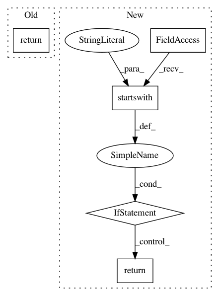

c6daa24e3cac10e3488d5a2eadfd6134de55e677,keras/backend/theano_backend.py,,batch_normalization,#Any#Any#Any#Any#Any#Any#,386
Before Change
normed = T.nnet.bn.batch_normalization(x, gamma, beta, mean,
sqrt(var) + epsilon,
mode="high_mem")
return normed
// SHAPE OPERATIONS
After Change
def batch_normalization(x, mean, var, beta, gamma, epsilon=0.0001):
"""Apply batch normalization on x given mean, var, beta and gamma.
"""
if theano.config.device.startswith("cuda") or theano.config.device.startswith("gpu"):
try:
return theano.sandbox.cuda.dnn.dnn_batch_normalization_test(x, gamma, beta, mean, var,
"spatial", epsilon)
except AttributeError:
pass
return T.nnet.bn.batch_normalization(x, gamma, beta, mean, sqrt(var) + epsilon,
mode="high_mem")
In pattern: SUPERPATTERN
Frequency: 3
Non-data size: 5
Instances
Project Name: keras-team/keras
Commit Name: c6daa24e3cac10e3488d5a2eadfd6134de55e677
Time: 2016-08-19
Author: crowsonkb@gmail.com
File Name: keras/backend/theano_backend.py
Class Name:
Method Name: batch_normalization
Project Name: microsoft/nni
Commit Name: 8af731463df46f6c73c933bdc45ed9a4ecd4e422
Time: 2020-11-17
Author: Quanlu.Zhang@microsoft.com
File Name: nni/retiarii/operation.py
Class Name: PyTorchOperation
Method Name: _to_class_name
Project Name: keras-team/keras
Commit Name: 8240ef7712030fdd0feca6939b8f1c4ba1979ae5
Time: 2019-03-13
Author: francois.chollet@gmail.com
File Name: keras/optimizers.py
Class Name: TFOptimizer
Method Name: from_config